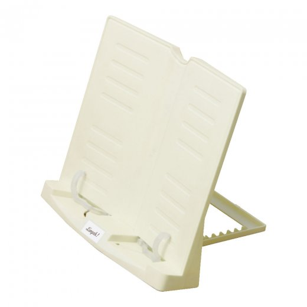
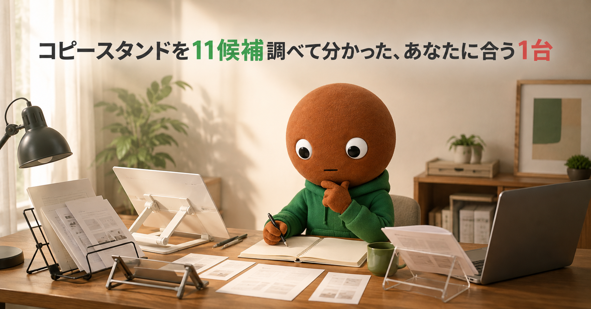
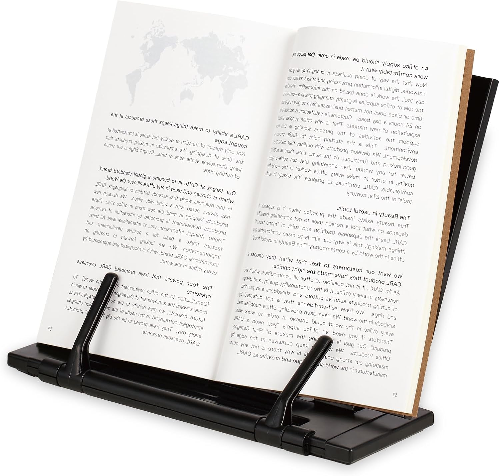
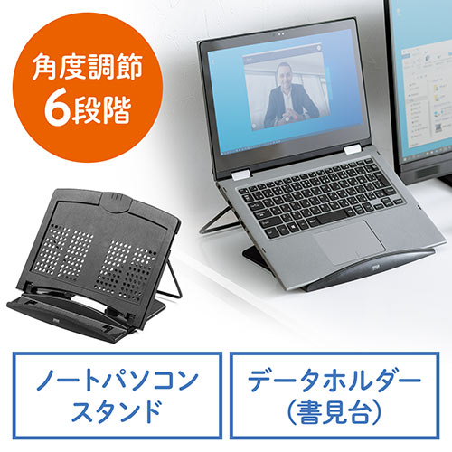
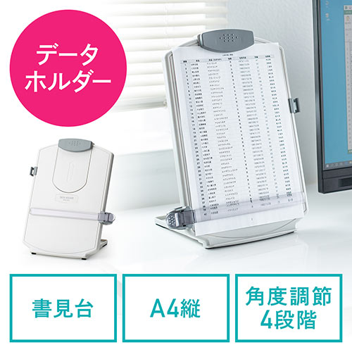
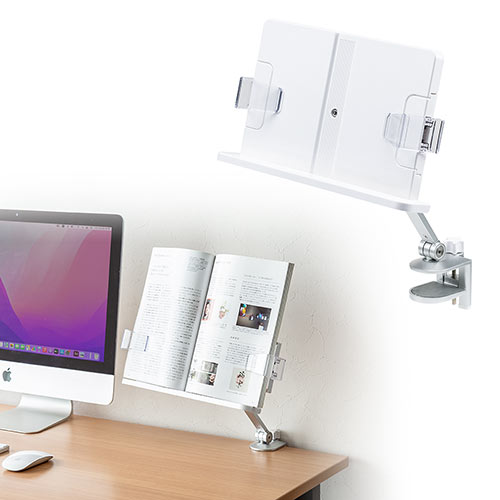
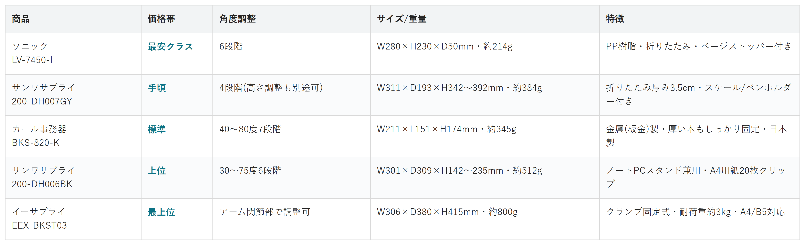

Amazonで見る紙の資料を見ながら入力する作業で首や目の疲れが気になってきた人へ
コピースタンド11候補を調査。角度の自由度・厚みへの対応力・兼用性から、選び方の違う5商品を比較しました。
自分に合うコピースタンドを探す
この記事はAmazonアソシエイト・プログラムの参加者として、紹介料を得る場合があります（PR）。仕様は調査時点の情報です。
11候補から、選び方の違う5商品に絞りました。まずは気になる1台へ。向いている人・向いていない人と、低評価レビューもまとめています。
あなたの使い方に合う、1台を。

Amazonで見る
Amazonで見る
Amazonで見る
Amazonで見る
Amazonで見る横にスワイプして、5商品を見比べる
選ぶ基準は「角度の自由度」「厚みへの対応力」「兼用性」の3つでした。
1つ目は「角度の自由度」。据え置き型は固定に近い段階調整ですが、クランプ式や回転式は好きな位置に合わせられます。
2つ目は「厚みへの対応力」。薄い紙数枚か、分厚い資料集かで、必要なクリップ枚数やアームの強さが変わります。
3つ目は「兼用性」。ノートPCスタンドやタブレットスタンドとしても使えるかで、デスクの上のアイテム数が変わります。
価格帯には、かなり幅がありました。

価格帯・角度調整・サイズ/重量・特徴の比較（価格帯は最安クラス〜最上位の5段階）
選ぶ決め手とにかく安さを重視するなら、この1台です。
ソニックのリビガク書見台(LV-7450-I)は、
5商品で一番手頃です。
本体はPP樹脂で、折りたためば
コンパクトに収納できます。
角度は6段階、サイズはW280×H230×D50mm、
重さは約214gです。
サクラチェッカーでサクラ度0%、
レビュー568件、満足度4.19を
確認しています。
選ぶ決め手厚い資料を扱うなら、この1台です。
カール事務器の
ブックスタンダー(BKS-820-K)は、
金属(板金)製です。
左右で個別に動くアームが、
厚い本もしっかり固定します。
角度は40〜80度の7段階、
推奨サイズは文庫〜新書(400ページ程度)、
日本製です。
サクラチェッカーでサクラ度0%、
レビュー501件、満足度4.29を
確認しています。
選ぶ決め手PC兼用を重視するなら、この1台です。
サンワサプライの
データホルダー(200-DH006BK)は、
ノートPCスタンドを兼ねています。
15.6型までのノートPCを乗せられて、
角度は30〜75度の6段階です。
A4用紙は20枚までクリップでき、
未使用時は折りたたんで
コンパクトに収納できます。
サイズはW301×D309×H142〜235mm、
重さは約512gです。
選ぶ決め手省スペースを重視するなら、この1台です。
こちらもサンワサプライの
データホルダー(200-DH007GY)です。
未使用時に厚み3.5cmまで折りたためます。
角度は4段階、
高さも別途調整できます。
行を見失わないスケール付きで、
ペンホルダーも付いています。
サイズはW311×D193×H342〜392mm、
重さは約384gです。
クリップはコピー用紙約50枚まで対応します。
選ぶ決め手置き場所の自由度を重視するなら、この1台です。
参考：イーサプライ公式
イーサプライの
ブックスタンドクランプ式アーム(EEX-BKST03)は、
デスク天板を挟んで設置します。
置くタイプより、
デスクの専有面積が
小さくなります。
耐荷重は約3kg、対応はA4/B5です。
天板の厚みは約2cmまで、
横幅は最大41.5cmまで対応します。
アーム関節部分で角度を調整でき、
高さや位置を自由に
変えられます。
紙の資料を見ながらパソコンに入力する作業で、首や目の疲れが気になってきました。
据え置き型、クランプ式、ノートPCスタンド兼用タイプ。種類が多すぎて迷います。なので今回、サクラチェッカーのデータホルダー・書見台ランキングや、各メーカーの公式サイトを使って調査しました。
各商品ごとに、向いてる人・向いてない人も調べているので、自分に合ったコピースタンドを探してみてください。
今回調べた11候補の中から、実際に選んだのは5つだけです。
サンワサプライ4機種、カール事務器2機種。ソニック、アスカ。イーサプライ2機種、Tounee。までの11候補です。
この中から、5つに絞りました。
サンワサプライのDH-317WとDH-316は、採用した200-DH006BKと役割が重複するため見送りました。
カール事務器の薄型フラットBKS-820-Wは、採用したBKS-820-Kと同シリーズで役割が重複するため見送りました。
アスカのどこでも学習台は、傾斜が10度で固定されていて調整幅が無く、他の据え置き型と役割が重複するため見送りました。
イーサプライの置き型EEX-BKST02は、採用したクランプ式EEX-BKST03との違いが薄いため見送りました。
Touneeの読書用ブックスタンドは、サクラチェッカーのデータ自体は信頼できました。ただしAmazon商品ページを検索しても、同じ商品と断定できるページは見つけられませんでした。推測でリンクを貼ることは避けたいため、見送りました。
上の11候補とは別に、サクラチェッカーが「要注意」と判定した商品も3つ調べました。
個別レビュー本文の真偽までは検証できないため、機械的に検出された事実だけを正直に書きます。
EAYHMのブックスタンドは、レビュー件数208件と、カテゴリ平均96件の217%という異常な多さでした。海外の販売ショップ(中国・電話番号+86)で、過去に201件のレビューが一括削除された履歴もありました。
「ブックスタンド 卓上スペード」という商品は、レビュー件数7件で、サクラ度の分析自体ができない状態でした。こちらも海外の販売ショップでした。
もっとも興味深かったのは、Touneeの読書用ブックスタンドでした。グレー版はサクラ度0%で合格だったのに、黒版だけレビュー件数2,318件、サクラ度5段階中5という要注意判定でした。同じブランド、同じ形の商品でも、色違いのASINで判定が分かれることがあるとわかりました。
11候補以上を比較していて、一番驚いたのは、Touneeの色違い判定でした。
同じブランド、同じ形の商品でも、判定が分かれました。グレー版はサクラ度0%、黒版はサクラ度5段階中5でした。
もう1つの発見は、ソニックのリビガク書見台が「子ども向け学習グッズ」として売られている点でした。
サイズも機能もデスクワークに十分使えるのに、売り場が違うだけで候補から外れやすいと感じました。
「安いから怪しい、ブランドが同じなら安心」とは限らないと、他の記事を調べた時と同じことを実感しました。
ここまで読んでもまだ迷ったら、コピースタンドとノートPCスタンドを兼ねるサンワサプライ 200-DH006BKが最初の1台におすすめです。
紙資料もノートPCも1台で支えられて、デスクの上のアイテムを増やさずに済むので、外しにくい選択です。
Amazonで見る→Q. コピースタンドは何を基準に選べばいい？
A. まず「厚みへの対応力」で挟みたい資料の量を決め、次に「角度の自由度」を決めるのがおすすめです。
Q. ノートPCと一緒に使いたい場合は？
A. サンワサプライの200-DH006BKなど、PCスタンド兼用タイプが向いています。
Q. デスクが狭くても置ける？
A. イーサプライのクランプ式なら、天板を挟んで固定するため置き場所を選びません。
Q. 安いものと高いもの、何が違う？
A. 今回の5商品では、クランプ固定やPCスタンド兼用などの機能の有無が、価格差につながっていました。角度調整の段階数は、価格の高い安いと比例するとは限りませんでした。